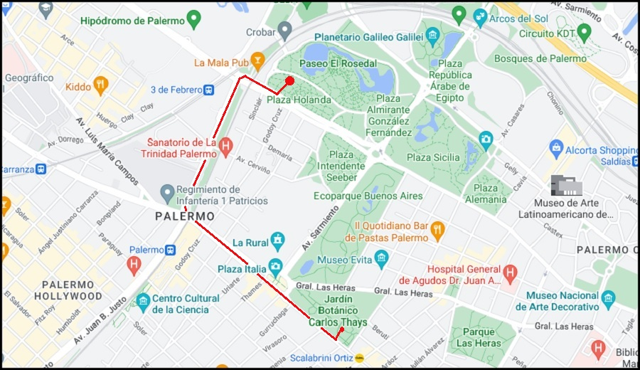
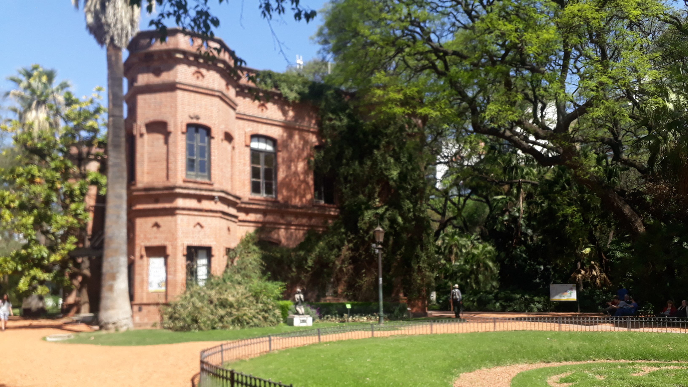
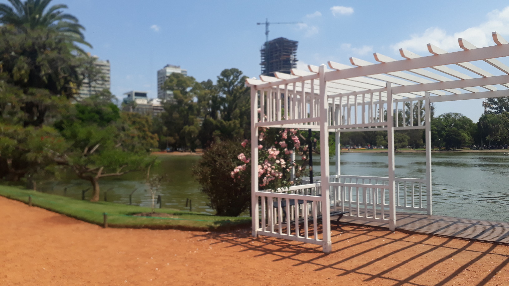

Interesting Turismo
Tour por Palermo
Jardín Botanico
El Jardín Botánico de la Ciudad «Carlos Thays», conocido popularmente como El Botánico, se encuentra próximo al ex Zoológico de Buenos Aires y al Parque 3 de Febrero del barrio de Palermo, en la ciudad de Buenos Aires. Fue inaugurado el 7 de septiembre de 1898.
Parque Tres de Febrero
El parque Tres de Febrero, conocido popularmente como los Bosques de Palermo, es un conjunto de parques ubicados en el barrio de Palermo, en Buenos Aires, Argentina. Es conocido por ser un lugar con un hermoso lago y bastantes sitios para hacer ejercicio.